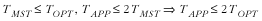

16.11 Questions and Answers
Q: In the
implementations presented for computing minimum spanning trees
and shortest paths, weighted graphs are represented by storing
the weights of edges in the graphs themselves. What is an
alternative to this?
A: For graphs
containing edges weighted by factors that do not change
frequently, the approach used in this chapter works well.
However, a more general way to think of an edge's weight is as
a function w (u, v),
where u and v are the vertices that define the
edge to which the weight function applies. To determine the
weight of an edge, we simply call the function as needed. An
advantage to this approach is that it lets us compute weights
dynamically in applications where we expect weights to change
frequently. On the other hand, a disadvantage is that if the
weight function is complicated, it may be inefficient to
compute over and over again.
Q: When solving the
traveling-salesman problem, we saw that computing an optimal
tour is intractable except when the tour contains very few
points. Thus, an approximation algorithm based on the
nearest-neighbor heuristic was used. What is another way to
approximate a traveling-salesman tour? What is the running
time of the approach? How close does the approach come to an
optimal tour?
A: Another
approach to solving the traveling-salesman problem using an
approximation algorithm is to compute a minimum spanning tree,
then traverse the tree using a preorder traversal (see Chapter
9). The running time of this approach is O (EV 2), assuming we use
the mst operation provided in
this chapter. As with the nearest-neighbor heuristic, this
approach always produces a tour that has a length within a
factor of 2 of the optimal tour length. To verify this, let
TMST be the length of the
minimum spanning tree, TAPP be
the length of any approximate tour we compute, and TOPT be the length of the optimal
tour. Since both the minimum spanning tree and the optimal
tour span all vertices in the tree, and no span is shorter
than the minimum spanning tree, TMST  TOPT . Also, TAPP 2TMST because only in
the worst case does an approximate tour trace every edge of
the minimum spanning tree twice. Therefore, TAPP 2TOPT . This is
summarized as follows: TOPT . Also, TAPP 2TMST because only in
the worst case does an approximate tour trace every edge of
the minimum spanning tree twice. Therefore, TAPP 2TOPT . This is
summarized as follows:

Q: When computing a minimum spanning
tree using Prim's algorithm, if we start the algorithm at a
different vertex, is it possible to obtain a different tree
for the same graph?
A: Especially
in large graphs, as Prim's algorithm runs, it is not uncommon
to find several white vertices with the same key value when
looking for the one that is the smallest. In this case, we can
select any of the choices since all are equally small.
Depending on the vertex we select, we end up exploring a
different set of edges incident from the vertex. Thus, we can
get different edges in the minimum spanning tree. However,
although the edges in the minimum spanning tree may vary, the
total weight of the tree is always the same, which is the
minimum for the graph.
Q:
Recall that when we solve the traveling-salesman problem, we
use a graph whose structure is inspected for the hamiltonian
cycle with the shortest length. Do all graphs contain
hamiltonian cycles?
Q: Not all
graphs contain hamiltonian cycles. This is easy to verify in a
simple graph that is not connected, or in a directed acyclic
graph. However, we never have to worry about this with
complete graphs. Complete graphs contain many hamiltonian
cycles. Determining whether a graph contains a hamiltonian
cycle is another problem that, like the traveling-salesman
problem, is NP-complete. In fact, many graph problems fall
into this class of difficult problems.
A: The
implementation of Prim's algorithm
presented in this chapter runs in O(EV2) time. However, a
better implementation runs in O(E
lg V). How could we improve the
implementation presented here to achieve this?
A: The
implementation of Prim's algorithm in this chapter runs in
O (EV 2) time because for each
vertex in the graph, we scan the list of vertices to determine
which is white and has the minimum key value. We can improve
this part of the algorithm dramatically by using a priority
queue (see Chapter
10). Recall that extracting the minimum value from a
priority queue is an O (1)
operation, and maintaining the heap property of the priority
queue is O ( lg n), where n is the number of elements. This
results in a runtime complexity of O
(E lg V ) for Prim's
algorithm overall. However, the priority queue must support
operations for decreasing values already in the queue and for
locating a particular value efficiently so that it can be
modified. Since the priority queue presented in Chapter
10 does not support these operations, Prim's algorithm was
implemented here without this improvement.
Q: Normally
when we compute a minimum spanning tree, we do so for a
connected graph. What happens if we try computing a minimum
spanning tree for a graph that is not connected?
A: Recall that
a graph is connected if every vertex is reachable from each
other by following some path. If we try to compute a minimum
spanning tree for a graph that is not connected, we simply get
a minimum spanning tree for the connected component in which
the start vertex lies. |